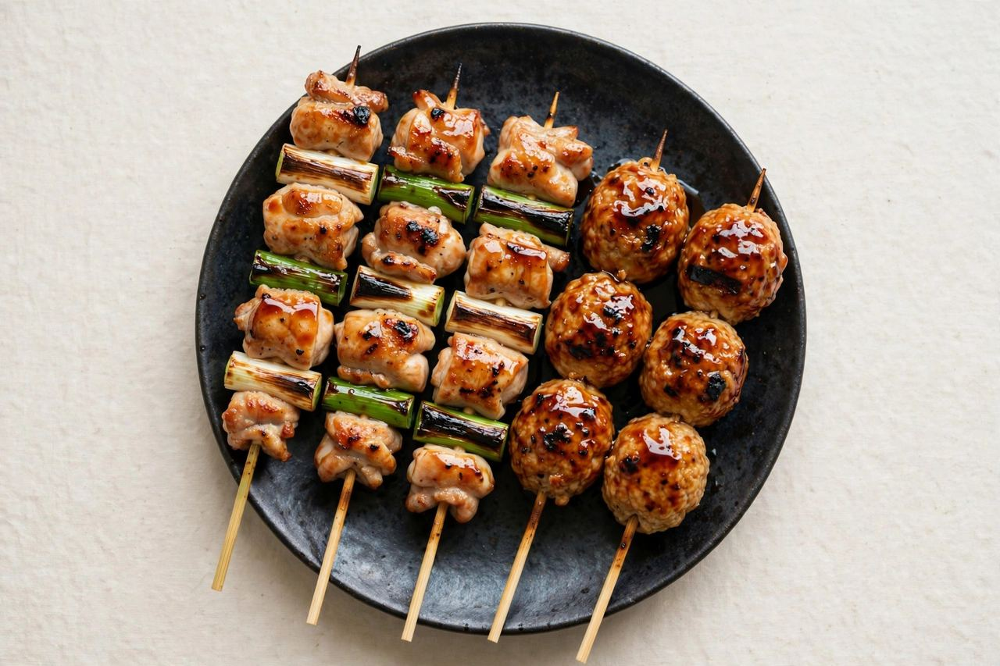

What is yakitori?
Skewered chicken grilled over charcoal — but it's not one dish, it's a whole category. Each cut of the bird gets its own skewer, and the seasoning choice (tare vs shio) changes everything.
The cuts you should know
- ねぎま Negima — thigh + green onion, the classic. Order this first.
- つくね Tsukune — chicken meatball, often with egg yolk for dipping.
- もも Momo — thigh · むね Mune — breast
- かわ Kawa — crispy skin · 手羽先 Tebasaki — wings
- ハツ Hatsu — heart · 砂肝 Sunagimo — gizzard (for the adventurous)
Tare vs shio — the key decision
- タレ Tare — sweet-savory soy glaze. Best on negima, tsukune, momo.
- 塩 Shio — just salt. Best on mune, kawa, tebasaki — lets the chicken shine.
If the menu doesn't ask, most shops default to tare. To specify: "tare de" or "shio de".
How to order
Order 3–5 skewers at a time, then order more — they grill to order and arrive in waves. "Moriawase" （盛り合わせ — assortment) gets you a chef's selection if deciding is too much.
Allergens and dietary check: is yakitori safe for you?
What a typical yakitori contains. Recipes vary by shop, so use this to know what to ask, then confirm with the staff. Tap an allergen for its Japanese restaurant card.
| Allergen / diet | Contains? | Why |
|---|---|---|
| Wheat / gluten | With tare | Tare sauce contains soy sauce (wheat). Shio (salt) skewers avoid it. |
| Soy | With tare | Tare sauce is soy-based. |
| Egg | Sometimes | Tsukune meatballs may contain egg; often served with raw egg yolk. |
| Sesame | Sometimes | Shichimi pepper on the counter usually contains sesame. |
| Pork | Sometimes | Pork belly (豚バラ) and bacon-wrapped skewers share the grill. |
| Fish / dashi | Rarely | Not usual. |
| Dairy | Rarely | Cheese tsukune exists. |
| Vegetarian? | Partly | Vegetable skewers exist, but are grilled with chicken. |
Several allergies? Build one card with our printable Japanese allergy card. Also see halal and vegetarian and vegan cards. This is travel information, not medical advice.
Common questions
Is yakitori served raw inside?
No — it's grilled through. (You're thinking of torisashi, chicken sashimi, a different and regional dish.)
Do I eat it off the skewer?
Use chopsticks to slide pieces off, or eat directly — both are fine at casual shops.
Is yakitori gluten-free?
Shio (salt) skewers usually are, as plain chicken grilled with salt. Tare (sauce) skewers are not, because tare is made with soy sauce, which contains wheat. Shared grills mean some cross-contact.
Does tsukune contain egg?
Often. Tsukune chicken meatballs are frequently bound with egg and sometimes breadcrumbs, and they are commonly served with a raw egg yolk dip.
Is yakitori only chicken?
Mostly, but yakitori shops often also grill pork belly, bacon-wrapped vegetables and vegetable skewers on the same grill.
FAQ
Tare or shio — which should I choose?
Tare is a sweet-savory soy glaze, best on thigh (momo) and meatballs (tsukune). Shio (salt) lets the chicken flavor shine — best on breast (mune), skin (kawa), and wings (tebasaki). When in doubt, ask for 'osusume' (recommendation).